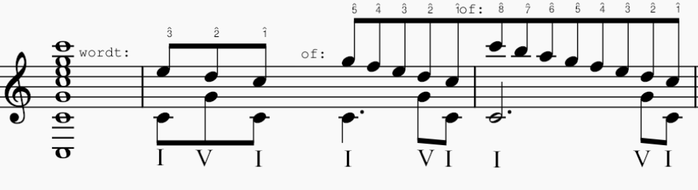

Documentair Componeren
Dit diagram illustreert het iteratieve proces van het Documentair Componeren project, waarbij een samenwerkingsmethode voor muziekcreatie wordt getoond. Het proces begint met twee initiële opnames, gelabeld als "Opname A" en "Opname B". Deze vormen de fundamentale tracks of motieven, aangeduid als "Fundament A + B".
Vanuit dit fundament reageren de muzikanten en voegen de muzikanten toe aan het fundament op een recursieve manier.
Iteratie 1: Muzikanten reageren op de initiële tracks, wat resulteert in "Opname A1" en "Opname B1". Deze nieuwe iteraties zijn geïnspireerd op en bouwen voort op het fundament.
Iteratieve Lussen:
- Voor "Opname A1" keert het proces terug, waarmee "Iteratie 1A" ingaat, dat vervolgens leidt tot de creatie van "Opname A2".
- Op een vergelijkbare manier gaat "Opname B1" naar "Iteratie 1B", wat leidt tot "Opname B2".
Elke iteratie vertegenwoordigt een cyclus van luisteren, interpreteren en creëren, waar de muzikanten worden aangemoedigd om 'over het fundament heen te spelen' of te improviseren op de bestaande lagen.
Deze cyclus kan zoveel iteraties voortzetten als gewenst, elke keer diepte en complexiteit toevoegend aan de compositie. Het diagram dient als een visuele routekaart die de deelnemers door de cyclische reis van het creëren van een samengesteld muziekstuk leidt dat dynamisch en altijd in ontwikkeling is.
Muzikanten die geïnteresseerd zijn in deelname aan dit inventieve en samenwerkingsproject worden uitgenodigd zich aan te melden. Door dit iteratieve proces streven we ernaar individuele muzikale expressies te weven in een rijk tapijt van collectieve creativiteit.
Voor meer informatie en om deel uit te maken van dit evoluerende muzikale verhaal, registreer via het aanmeldformulier.
Mijn afstudeer scriptie heb ik geschreven over documentair componeren. Download de scriptie.
Schenkeriaanse Analyse als Compositorisch Gereedschap
Deze paper onderzoekt de toepassingen van Schenkeriaanse analyse als een middel voor componisten om structureel inzicht te verkrijgen en muzikale spanning doelgericht te manipuleren. Schenkeriaanse analyse, oorspronkelijk ontwikkeld als analytische methode, biedt een unieke benadering voor het begrijpen van muzikale lagen en hiërarchie binnen een compositie.
Door reductie en abstractie worden diepere muzikale structuren blootgelegd, wat componisten helpt bij het ontwikkelen van coherente en expressieve muzikale vormen. In deze paper wordt de techniek niet alleen besproken vanuit een analytisch perspectief, maar ook toegepast als een creatief hulpmiddel binnen het compositieproces.
Vanuit deze invalshoek verkennen we hoe Schenkeriaanse principes kunnen worden geïntegreerd in hedendaagse compositiepraktijken. De relatie tussen oppervlaktestructuur en diepere lagen van muzikale organisatie wordt onderzocht aan de hand van praktische voorbeelden en eigen composities.
Voor een diepgaandere analyse en praktische toepassingen, lees de volledige paper hier: Download de paper.